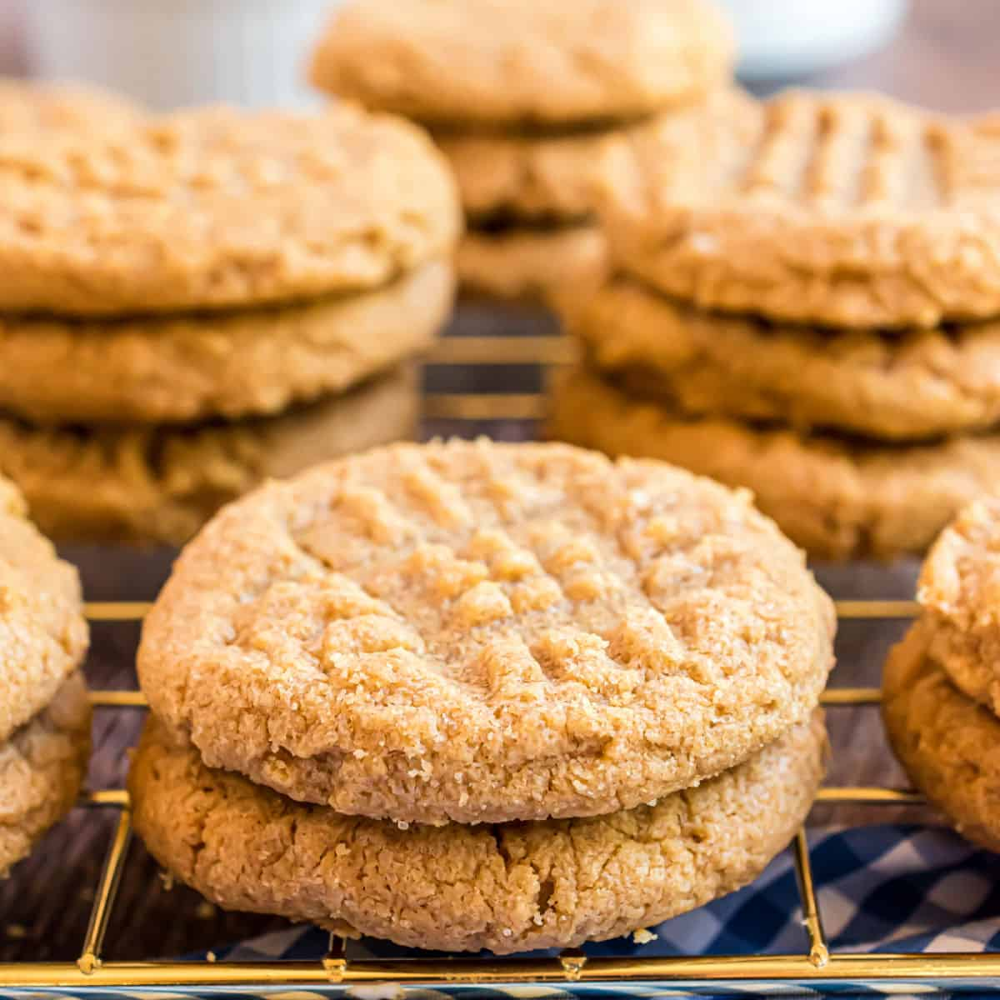
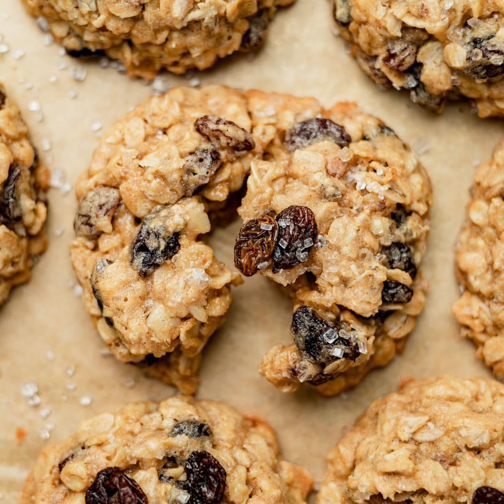
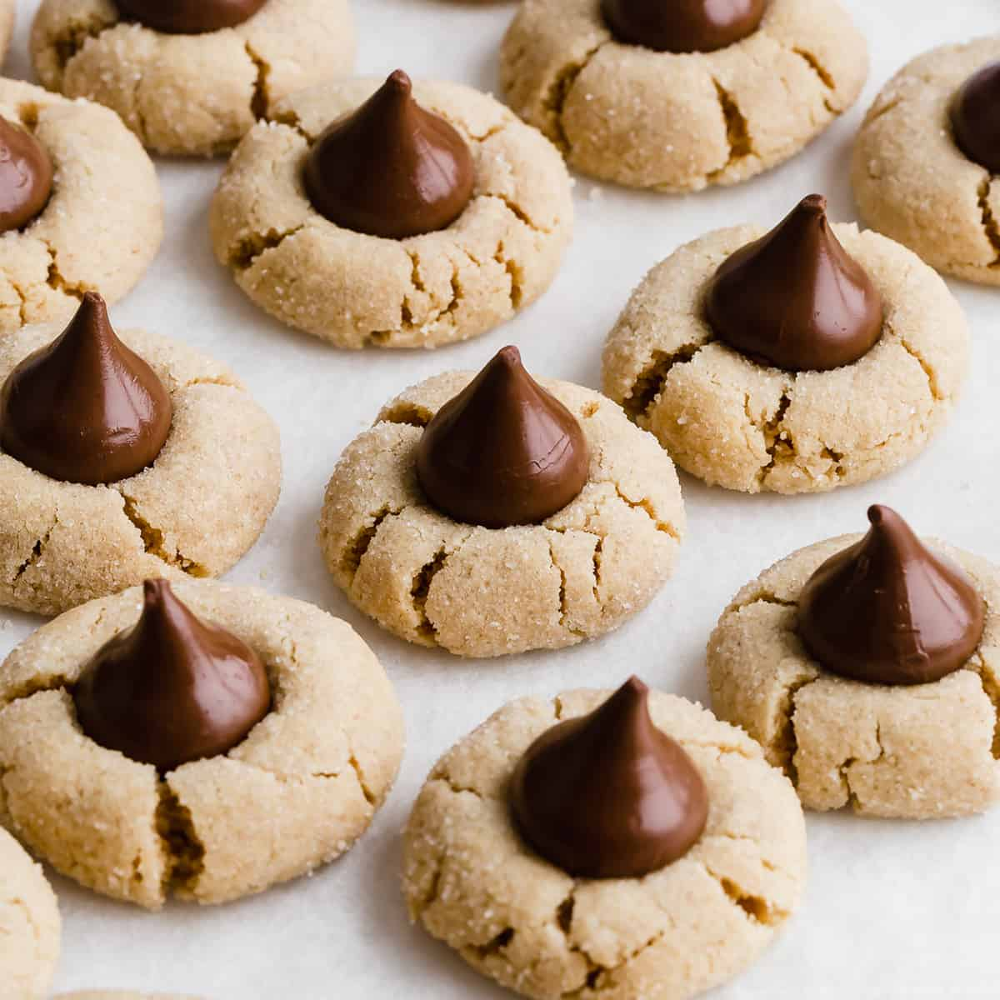

Chocolate Chip Cookies Ingredients

- 1 cup salted butter* softened;
- 1 cup white (granulated) sugar;
- 1 cup light brown sugar packed;
- 2 tsp pure vanilla extract;
- 2 large eggs;
- 3 cups all-purpose flour;
- 1 tsp baking soda;
- ½ tsp baking powde.
Peanut Butter Cookies Ingredients
- 1 cup unsalted butter;
- 1 cup crunchy peanut butter;
- 1 cup white sugar;
- 1 cup packed brown sugar;
- 2 large eggs;
- 2 ½ cups all-purpose flour;
- 1 ½ teaspoons baking soda;
- 1 teaspoon baking powder;
- ½ teaspoon salt.

Oatmeal Raisin Cookies Ingredients

- 1 cup unsalted butter;
- 1 cup packed light or dark brown sugar;
- 1/4 cup granulated sugar;
- 2 large eggs*;
- 1 Tablespoon pure vanilla extract;
- 1 Tablespoon molasses;
- 1 and 1/2 cups all-purpose flour;
- 1 teaspoon baking soda.
Peanut Butter Blossoms Ingredients
- 1¾cups all-purpose flour;
- 1teaspoon baking soda;
- ½teaspoon salt;
- 4ounces butter, at room temperature;
- ½cup smooth peanut butter;
- ½cup granulated sugar, plus more for rolling;
- ½cup light brown sugar;
- 1large egg.
